Query editor overview #
The query editor offers a full environment to write and execute SQL statements. You can access all running clusters and their configured catalogs.
Access the query editor at any time by clicking Query editor on the left hand menu. If the left menu is not currently visible, click the ☰ button to restore it.
Alternatively, select Query from the options menu in the list of clusters.
Cluster explorer pane #
Use the cluster explorer pane on the left to explore the available clusters and their connected data sources.
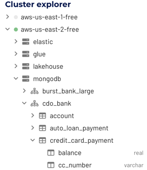
The cluster explorer pane shows an expandable, hierarchical diagram with the following symbols:
| clusters | cloud symbol |
| catalogs | disks symbol |
| schemas | hub symbol |
| tables | table symbol |
| views | eye symbol |
| columns | two-column table symbol |
To expand an element, click its > expanded arrow. To collapse an element, click its v collapsed arrow.
Click a cluster’s name to collapse all catalogs under it. Similarly, click a catalog to collapse all schemas under it, and click a schema to collapse its table list.
Quick info dialogs #
Click or hover over the name of a cluster in the cluster explorer to show a pop-up information dialog that shows the status, size, and region for the selected cluster. For example:

Click or hover over the name of a table in the cluster explorer to show the full path of the table including cluster name. For example:
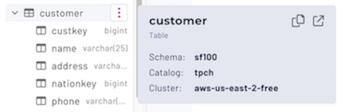
Pop-up vertical ellipsis menus #
The cluster explorer displays a vertical ellipsis menu ( ) on the right of an object’s name when you select or hover over its name. The menu options apply only to the current object. The following example shows the menu for a table:
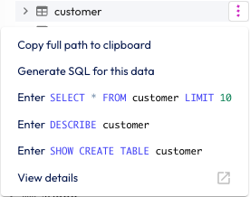
The following table shows the menu options provided by the vertical ellipsis menus for the cluster explorer objects.
catalog.schema.tablename
As shown in the following table, when the cluster explorer menu options return a path, they wrap each path element in quotes. This takes into account possible spaces and special characters in those element names that may be supported by the current catalog.
For example: “catalog”.”schema”.”tablename”
| Object | menu options |
|---|---|
| Cluster | |
| Catalog |
|
| Schema |
|
| Table |
|
| View | Same options as for a table, with the word view substituted. |
| Column |
|
Examine table parameters #
Use the SHOW CREATE TABLE statement to examine the structure of a table and
reveal its creation parameters. This is especially useful for tables in object
storage, where you may need to see a
table’s type and format.
The vertical ellipsis ( ) menu for tables includes a predefined SHOW CREATE
TABLE statement for the current table. When run, the result appears as a
single long line in the results pane. Click this long line to
open a dialog that shows the column structure of the table. For object storage
tables, the column list is followed by the table’s creattion parameters. For
example:
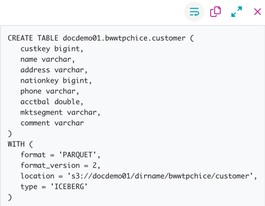
In the vertical ellipsis menu for a view or
materialized view, invoke the SHOW CREATE VIEW statement. As with tables,
click the long line in the results pane to open a dialog that shows the CREATE
VIEW parameters for the current view. For example:
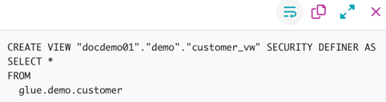
Editor pane #
Use the editor pane to type your SQL query of interest, then execute the query in one of three ways:
- Click the ▶ Run button
- Press Ctrl+Enter (⌘+Enter on Mac)
- Invoke the context menu and select Run query
If your Starburst Galaxy session has more than one cluster defined, you may have to specify which cluster to apply the Run operation to. Select your active cluster with the location drop-down buttons.
Run options #
There are two variations of the Run button. The last variation you used remains active for all tabs. Use the drop-down arrow in the current Run button to select between the two Run options, which are:
-
▶ Run (limit 1000): This default option retrieves up to 1000 rows of the query’s result set and places it in the results pane. Result sets longer than 1000 rows are truncated as if
LIMIT 1000was appended to the query. You can use the Download link at the top of the results pane to download a CSV file of this truncated result set as long as it is still visible in the results pane. -
▶ Run and download: This option retrieves a query’s entire result set and streams it in CSV format to a file in the current user’s default downloads directory. The name of the file is browser dependent. Chrome prompts for a filename; Firefox and Safari write to a file named
results.csv, appending a digit or a timestamp if the target filename exists. While the download proceeds, a few rows of sample results appear in the results pane. Use this option when you expect a large result set from a query.
Query selection #
There are two ways to specify which query to run, if you have multiple SQL statements in a tab.
-
Click to select: Click to place the cursor anywhere in a complete SQL statement that terminates with a semicolon, then invoke one of the Run methods.
-
Highlight to select: Highlight the complete SQL statement or valid portion of a statement, then invoke one of the Run methods.
Click to select is strict about requiring a terminating semicolon for statements. A statement with a missing semicolon prevents running that statement and statements below it in the same tab.
When you use a pop up vertical ellipsis menu to place a SQL statement on the canvas, the statement is highlighted. Highlight to select is more forgiving of semicolon placement.
When text is selected, the Run button options change into:
- ▶ Run selected (limit 1000)
- ▶ Run and download selected
Auto-completion #
The query editor anticipates SQL commands and most function names as you type,
and presents a dialog that suggests several ways to complete the command or
function you started. Select an option and press the Tab key to accept one of
the options, or keep typing to close the dialog.
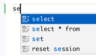
Location drop-downs #
The right hand corner above the editor pane contains drop-down selectors that let you specify the default cluster, catalog, and schema for queries in the current editor tab. These settings persist for each tab separately, and are restored when you reopen a saved query.
If you have more than one cluster in your Starburst Galaxy account, you must specify the active cluster before the Run button becomes active. When you open a new tab, cluster selection is empty and a message reminds you to select a cluster before querying.
A green dot in the cluster drop-down means the cluster is currently running. Selecting a stopped cluster in the drop-down starts the cluster.
Making these UI selections for catalog and schema is analogous to entering the
USE command in a SQL client session. If you do specify an actual USE
catalog.schema statement as an editor command, the specified catalog and schema
display as current selections in these drop-downs. However, there is no support
for specifying a cluster with a USE command.
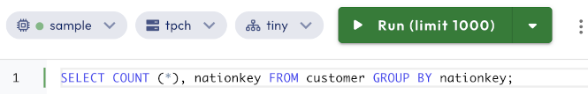
Editor pane vertical ellipsis menu #
To the right of the three location drop-downs is a vertical ellipsis ( ) menu button with the following options:
- Copy: to copy the current editor selection to the clipboard.
- Prettify and Command palette: as described next in Context menu.
Context menu #
The query editor canvas shows a context menu invoked in the standard ways: right-click on a right-hand configured mouse, double tap on a trackpad, and so on. The context menu provides:
- Run query: to execute the query that contains the cursor.
- Change All Occurrences: to search and replace a string in a long query being edited.
- Cut, Copy, Paste: editing commands.
- Prettify: to format the selected query to add spaces, tabs, and newlines where needed.
-
Command palette: opens a dialog from which you can select editing commands to run at the current cursor location or run on the current editor selection. With the cursor in the editor pane, you can also press F1 to open the command palette. Press Esc to close the palette.
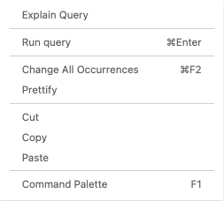
Tab managment #
You can manage your queries in separate editor tabs, which you can save, close, and reopen the next time you log in.
Separate query editor tabs #
Organize your queries into separate tabs. For example, with a long-running query active in one tab, use the button in the query editor to open another tab for different queries. You can also open a new tab from the Create new query button in the Saved queries pane.
The default name for newly created tabs is the date and time of creation. Rename a tab by double-clicking the tab name, or from the menu in the Saved queries pane.
By default, tab contents and tab names persist across login sessions until the tab is closed.
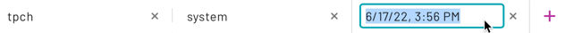
Saved queries #
The Saved queries pane provides two lists of the names of query editor tabs. Use these lists to restore a tab and its query to the editor for rerunning or further editing. The two lists are:
-
Recent preserves editor tabs that were opened in the last TBD days, including both named and default timestamp named tabs.
-
My saved queries preserves the same editor tabs in the Recent section, plus any editor tabs that you named more than TBD days ago.
The vertical ellipsis ( ) menu for each line provides a way to change the Name field for the current line, plus a Delete option for the current line.
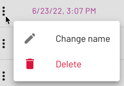
Query lines with default timestamp names are automatically deleted from the Recent section after TBD days. Query lines that you have renamed are automatically preserved in the My saved queries section. To preserve a query beyond this auto-preserve period, just give the query’s tab a name.
If you delete a timestamp-named line from the Recent section, it is also deleted from the My saved queries section. That query and its editor tab cannot be restored. If you delete a named line from the My saved queries section, that query cannot be restored.
At the end of each line are Open and Preview links.
-
Open switches to the query editor tab that matches this line, opening a new tab for this query if necessary.
-
Preview opens a dialog in the current page that shows this line’s query in a read-only view. Click Open in editor to open a tab containing this query in the query editor, or click Close to exit the preview dialog.
Results pane #
The results pane below the editor displays the query processing progress and results. Typically one or more rows and columns are returned by a query.
Select the border between the editor and results panes to drag the results pane up or down.
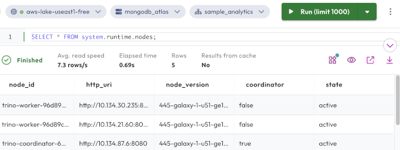
Above the results table on the left, the status bar displays current query processing statistics:
- Status: displays progress while the query is processed, and final status when complete.
- Avg. read speed: from all sources, in rows per second.
- Elapsed time: in seconds since query processing started.
- Rows: the number of rows returned.
While a query is running, a progress estimate for that query is shown:
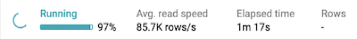
If your result set is very wide, or is greater than 1000 rows, it is truncated.
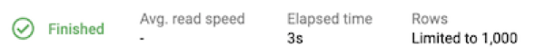
On the right are three active links:
-
Query details: opens the details page for the most recently run query.
-
Trino UI: opens the Trino UI to see information about recently run queries.
-
Download: if results are shown from the last query, initiates download of those results as a CSV file. Results are not stored, and are only available until a new query is run or your page is closed or refreshed, whichever comes first.
Query statuses #
Generally, queries start as Submitted, and move on briefly to Queuing and Analyzing. Queries may show as Waiting for resources before proceeding to Planning and Executing. As a query ends its execution, you may see the Finishing status before it shows you if the query Finished or Failed.
The query statuses you could see include:
- Analyzing: The time spent reading metadata from the data sources and analyzing the query for semantic errors.
- Cancelling: The status that displays after a user clicks the Cancel button.
- Cancelled: The query was successfully cancelled.
- Executing: The query is executing.
- Failed: Query execution has failed.
- Finishing: The query is finishing (such as commit for auto-commit queries).
- Finished: The query is finished executing and all output was consumed.
- Planning: The time spent creating and optimizing the query execution plan.
- Queued: The query is accepted and is waiting on execution.
- Queuing: The time spent waiting for the other queries to process.
- Running: The query has at least one running task.
- Starting server: The server was not up when user submitted a query, so the query is waiting until it is up.
- Starting: The query execution is starting.
- Submitted: The query is now submitted.
- Waiting for resources: The time spent waiting for resources to process the query, the value can include analysis time.
Locate query statuses #
Active query statuses display as the query is running as a part of the results pane in the Query editor.
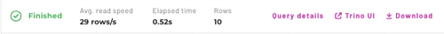
You can also review previous query statuses from specific queries from the Query history page by selecting a Query ID. See the below example.
Example #
The Query execution diagram displays performance and timing data about query processing. Review the history of the query statuses within the Query execution diagram:

Help menu #
The Help (?) menu includes the following convenience links for requesting assistance:
-
Chat with us: Opens a chat session with Starburst Galaxy Support.
-
Documentation: Opens the Starburst Galaxy documentation.
Is the information on this page helpful?
Yes
No
Is the information on this page helpful?
Yes
No